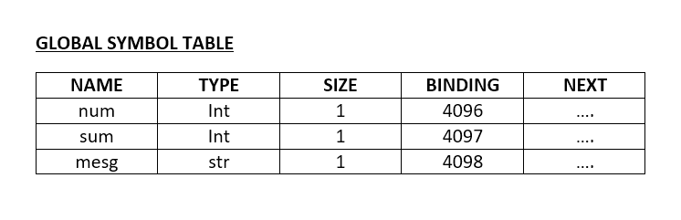
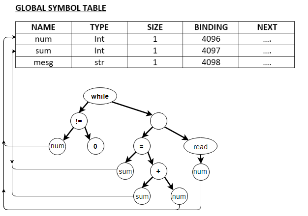
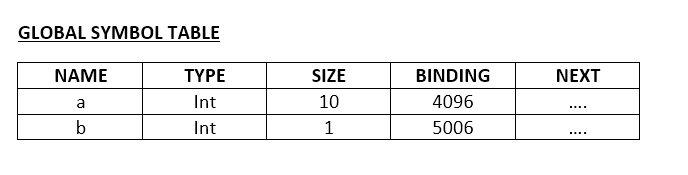
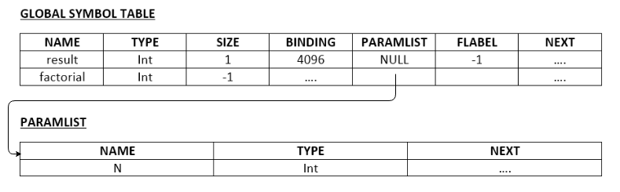
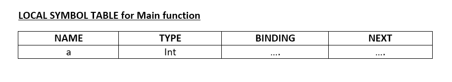
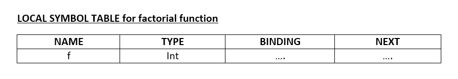
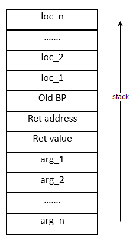

Using the Roadmap
This roadmap is divided into several stages, to be done in sequential order. Incrementally you will build a compiler for the ExpL language according to its specification. Links are provided for background reading material wherever appropriate. It will be assumed that you have background in C programming, Data Structures and Principles of Computer Organization.
Stage 0 : Installation and Preparation
Pre-requisites: NIL
In this stage, you will download and familiarize yourself with the simulation package and learn the compiler design software tools LEX and YACC. Follow the instructions below.
- 1. Install the LEX, YACC and the XSM simulator package. Follow the instructions here
.
You need to learn two software tools - YACC and LEX which you will use in the project. These tools are somewhat
sophisticated. Fortunately, understanding what is enough for the purpose of our compiler project is not very difficult. The following tutorials will help you through this process.
If you are not already familiar with the tools LEX and YACC do the following:
The next step is to understand the target machine envionment. You must carefully go through the following tutorial
before proceeding to the next stage of this roadmap.
5. Complete the XSM execution environment tutorial.
With this, you are ready with all the required pre-requisites to proceed further in this roadmap.
Stage 1 : Code generation for Arithmetic Expressions
Prerequisites:
Learning Objectives:
In this stage, you will:
- 1. Parse an input arithmetic expression and create an expression tree using YACC and LEX.
- 2. Recursively traverse the tree and generate assembly language code. You learn to solve the register allocation problem enroute.
The strategy of the roadmap is to help you build the compiler in stages. We start here by building a compiler for simple arithmetic expressions. In subsequent stages, we will add features of the language one by one, learning the relevant theoretical concepts along the way.
In this stage, you will implement a very simple compiler that can take an arithmetic expression as input (from some input file) and generate a target executable file containing XSM instructions to evaluate the expression and output the result.
We assume that you have implemented the library routine for handling console output, which you were asked to do in the XSM execution environment tutorial.
Consider arithmetic expressions with the following syntax.
E : E + E | (E) | NUM
Where the lexeme NUM correspond to integers. Assume left associativity for '+'. Thus, the tokens relevant are NUM and +. The attribute value associated with a number is the number read. Assume that the input file is passed as argument to the main() function in YACC.
The lexer must pack the attribute into a tree node of the following structure:
typedef struct tnode{
int val;
char *op; //indicates the name of the operator for a non leaf node
struct tnode *left,*right; //left and right branches
}tnode;
#define YYSTYPE tnode*
Since the semantics actions in the parser must build the tree, the following function must be written:
/*Make a leaf tnode and set the value of val field*/
struct tnode* makeLeafNode(int n);
/*Make a tnode with operator, left and right branches set*/
struct tnode* makeOperatorNode(char op,struct tnode *l,struct tnode *r);
Task 1: Build the expression tree for the given input.
Exercise 1: Output the prefix and postfix forms of the expression from the tree.
(Note: You would have already completed this task if you have done the Using Yacc With Lex tutorial ).
Now, comes the next task - to generate assembly language program equivalent for the expression and write it out into an executable file in the XEXE format. Once this is done, you can use the simulator to load the XEXE file into the memory of the XSM machine and execute it as outlined in the XSM run time environment tutorial.
To do this, one needs to know the following:
- 1. The machine model and the instruction set of the target machine.
- 2. Format of the executable file.
- 3. You need to know the address in the memory (in the target machine) where each instruction you generate will be loaded (by the OS loader). This is because program control instructions like JMP, CALL etc., requires specification of the jump address.
As already outlined in the XSM run time environment tutorial, the header will be loaded into addresses 2048-2055. The first instruction generated by you will be loaded to the address 2056. Each XSM instruction occupies 2 memory words. Hence, the next instruction will be loaded at address 2058 and so on. The entry point field of the header must contain the address of the first instruction to be fetched and executed.
- 4. You need to fix the memory addresses where variables and other data is stored. For example, for each variable in the program, the compiler will have to allocate storage space in memory. The ABI stipulates that the region for this is the stack region. Thus each variable must be stored in some address between 4096 and 5119.
- 5. Since XSM machine stipulates that arithmetic and logic instructions can be done only when operands are loaded into machine registers, we need to load the contents of variables/constants in the program into the machine registers before processing them. This brings in the problem of register allocation. The XSM machine makes available 20 registers (R0-R19) for the compiler.
Of the above, the XSM execution environment tutorial has already explained (1) and (2). Evaluation of expressions do not involve either storage allocation or program control transfer (JMP). Hence, we will not take up (3) and (4) at this stage. However, we need to solve (5) now.
What must be the evaluation strategy?
Let us take an example:
If you are given a two node expression tree as shown below corresponding to the expression (3+2):

The evaluation strategy will be:
- 1. Store 3 in a register – say R0.
- 2. Store 2 in a register – say R1.
- 3. ADD R0, R1.
The result will be stored in R0 and is sufficient for us. To generate code for the above tasks and write it into a target_file, you must write code as:
fprintf(target_file, "MOV R0, 3");
fprintf(target_file, "MOV R1, 2");
fprintf(target_file, "ADD R0, R1");
However, life becomes complicated if we have an expression like (3+2)+(5+6) resulting in the following tree.

Of course, we can “hand craft” this case also. But the strategy will not generalize. The basic issue is that your compiler does not know the input expression before-hand. Technically speaking, the issue is that the “expression is not available at compile time, but only known at run time”. Your code generation module must be more "intelligent" to handle arbitrary expressions.
The root of the problem with the above code is that R0 and R1 were picked by you and not by your compiler. Thus, we must have a register allocation policy (basically a function) that returns a free register whenever we require one. That is, you must design the following functions:
int getReg() // Allocate a free registers
That returns the register number of an unallocated register, so that your code for adding 3 and 2 would look like:
int p = getReg();
int q = getReg();
fprintf(target_file, “MOV R%d, 3”, p);
fprintf(target_ file, “MOV R%d, 2”, q);
fprintf(target_file, “ADD R%d, R%d,”, p,q);
In addition to allocating registers, you must also have mechanism to release a register back into the register pool. In the above example, after the ADD instruction is generated R1 can be released and send back to the register pool.
For this purpose, you will write a function
freeReg() // Releases a register.
To make the allocation strategy simple, we suggest that you generate target code in such a way that the result of a CPU instruction involving two registers will be always stored in the register with lower index. In the code above the result of the computation is kept in R0 and not R1 so that the register with the higher index value can be released. As a consequence, the freeReg() function does not require any arguments. Instead, freeReg() and getReg() can be designed to keep track of the highest numbered register allocated so far and hence can keep track of the correct register that must be allocated or freed.
The following summarizes the register allocation strategy:
1. Whenever a register is needed, allocate the lowest numbered register that is free. (Thus, give R0 if possible, otherwise R1 etc.)
2. Whenever we free a register, always release the highest used register that was allocated previously. (Thus, if R0, R1 and R2 were allocated, freeReg() must release R2).
Finally, we must design a code generation module. The strategy here is to start with an expression tree and do the following:
1. At the leaf nodes of the tree (corresponding to a NUM), Allocate a new register and store the number to the register.
2. At the intermediete nodes :
a. Generate code for the left subtree (recursively). Find out the register holding the result.
b. Evaluate the right subtree (recursively). Find out the register holding the result.
c. ADD the contents of the two registers and store the result in the lower numbered register.
d. Release the higher numbered register and return.
In the above box, as step 2.a and 2.b requires finding the index of the register which stores the result of expression evaluation. The simplest strategy is to design a codeGen() function that can take as input an expression tree and generates code for the expression, returning the index of the register storing the result:
#define reg_index int;
reg_index codeGen( struct node *t) {
..
..
return register number storing result
}
The codeGen() function takes as input a pointer to the root of an expression tree and generates code for the subtree rooted at that node. After generating code, the function must return the index of the register storing the result. See this link for furthur details.
Task 2: Complete the simple compiler for expression evaluation and generate the executable file. The result of expression evaluation may be stored in the first location of the stack region – memory address 4096. This value may be printed out using the write system call. Note that the XEXE executable format must be adhered so that the XSM simulator can load and execute the file.
Note: To run the simulator, you must prepare the library.lib together with the XEXE executable file. Please follow instructions in the XSM environment tutorial.
Exercise 2: Modify the grammar to
E : E + E | E*E | E-E| E/E | (E) | NUM
Assume standard rules of precedence and associativity.
Exercise 3: Redo Exercise 2 assuming that the input expression is given in prefix from.
Note: Here we assumed that machine registers never get exhausted. XSM provides 20 general purpose registers and these registers are sufficient for all practial purposes. However, if all registers are exhausted, then space will have to be allocated in memory. We will not address this contingency in this roadmap. If register pool is exhausted, your compiler may stop compilation and flag "Out of registers" error.
Stage 2. Introduction to static storage allocation
Prerequisites :
Learning Objectives :
- In this stage, you will extend the expression evaluator of the previous stage to support a set of pre-defined variables with Input/Output and assignment statements. You will get introduced to the notion of static storage allocation enroute. You will also learn to differentiate between statements and expressions and also construct an abstract syntax tree representation for a program.
Consider a simple programming language with the following syntax:
Program ::= BEGIN Slist END | BEGIN END
Slist ::= Slist Stmt | Stmt
Stmt ::= InputStmt | OuptputStmt | AsgStmt
InputStmt ::= READ(ID);
OutputStmt ::== WRITE(E);
AsgStmt ::== ID = E;
Apart from the literal tokens, BEGIN, END, READ, and WRITE are tokens corresponding to keywords "begin", "end", "read" and "write". ID is a token for variables. We will permit only variables [a-z] in this stage.
To support variables to appear in expressions, you must add the rule E := ID to the expression syntax used in Stage 1. The above syntax defines a small programming language that permits just straight line programs (programs without conditionals, loops, jumps or such control transfer constructs). There are only 26 pre-defined variables that are supported – a, b,c,..,z. A typical program would look like:
begin
read (a);
read (b);
d = a + 2 * b;
write (a+d);
end;
We will assume that variables can store only integers. Handling variables of multiple types will be taken up in subsequent stages.
A conceptual point to note here is that apart from the addition of variables, the extended language now has two kinds of constructs – expressions and statements. While an expression evaluates to a value (in this case, we limit ourselves to integer expressions), a statement commands the execution of some action by the machine. For example, the statement read(a); instructs the action of reading a variable from the console into a variable a. write(a+d); instructs evaluation of the expression (a+d) and printing the result into the console output.
Another important conceptual point to note is that the introduction of variables also demand binding them to storage (memory) locations. The storage location associated with a variable must hold the value of the variable at each point of program execution. A statement (like the assignment statement or a read statement) that alters the value of a variable must result in a change the value stored in the corresponding storage location.
In the present case, the compiler can fix the address for each variable in memory right at the time of program compilation. Since the ABI stipulate that storage allocation must be done in the stack region, we can pre-allocate the first 26 memory locations in the stack region of memory for the variables a-z. Thus, variable a will refer to contents of address 4096, b to contents of address 4097 and so on. Any time the compiler encounters the variable – say a, the address to be looked at is fixed – in this case 4096. Such allocation policy is called static allocation. In later stages you will encounter situations where it will not be possible for the compiler to fix memory address of a variable at compile time. This leads to run time and dynamic memory allocation policies. For now, we will be content with static allocation.
To implement the above, your compiler must:
- 1. Fix the storage location for each variable. As noted above, the first 26 locations of the stack region starting at address 4096 may be assigned for a to z. Note that the XSM machine can store an integer in a single memory location. Hence, for each variable we need to allocate only 1 memory word. Note that "allocation" here means that while generating code, the compiler assumes that the variable a is stored in location 4096, b in location 4097 and so forth.
- Note : Some programming languages stipulate that variables must be initialized to zero. In that case, the compiler must generate code to MOV 0 to each of these locations before generating code for statements in the program. Some machines provide machine instructions that support initializing memory to zero. Certain operating systems would have initialized all memory regions (except those to which code is loaded into) to zero at load time. We will not pursue these issues here.
- 2. To translate an assignment statement, the compiler must generate code to evaluate the expression and then MOV the contents of the register storing the result to the memory location allocated for the variable.
- 3. To translate a Read statement, the compiler must generate code to invoke the library function for read, passing the address of the variable as argument. Write is implemented similarly.
But before getting into code generation, we must create an abstract syntax tree (AST) for the program. An abstract syntax tree is a tree representation of the program, just like an expression tree for expressions. An abstract syntax tree for the above program would look like the following:

Observe that each node now needs to store distinguishing information like:
- 1. Whether it corresponds to a variable, constant, operator, assignment statement, write statement or read statement.
- 2. In case of operators, the information on the operator must be present. In the case of constants, the value must be stored in the node. In the case of variables, the node must contain the variable name.
- 3. There are also connector nodes which simply join two subtrees of statements together.
This leads to the definition of the following node structure:
Task 1 : Use Yacc and Lex to generate abstract syntax tree representation of a program. A file containing the source program will be input to your program.
Thus, after parsing, we use the syntax directed translation scheme of YACC to construct an intermediate representation – namely, the abstract syntax tree. This phase of compilation is sometimes called the front end of the compiler. The next step is to recursively traverse the expression tree to generate executable code. This is typically called the back end. The output of the front end is generally a machine independent intermediate representation like the AST. The back end of course will be dependent on the target platform.
Task 2 : Modify CodeGen() function of Stage 1 to generate code for the abstract syntax tree generated as Task 1 above.
In the next stage, we will see how program control instructions like if-then-else can be incorporated into the language.
Note : An abstract syntax tree is an intermediate representation of the source program in a tree form suitable for code generation. There are several other forms of intermediate representations like the three address code form, the static single assignment form etc. This roadmap will be based on the abstract syntax tree representation.
In commercial strength compilers, the source is first translated to intermediate forms like the three address form which is a lower level representation (that is the intermediate form is closer to machine code) than the AST. Typically machine independent code optimizations are performed on the intermediate code and only then the back-end code generation is run. This step is followed by another set of machine dependent code optimizations before the target file is finally generated. As these issues are beyond the scope of our project, we will not dwell into these matters further in this roadmap.
Exercise 1 : Build an evaluator for the program. (Hint: Your front end does not change. But, instead of generating code from the AST, you can recursively "evaluate" it. For storage allocation of variables, you can simply declare an array that can store 26 integers and allocate one entry for each variable).
Note : The compiler generates target code which must be executed by the target machine. In our case, the compiler you wrote as Task 2 actually is a cross compiler. This means that your compiler generated target code that is not for your host system, but on some other target platform – which in our case the simulated XSM machine. The evaluator done in Exercise 1 actually does not generate "code" for any machine. Instead, it executes the program in "then and there". Such a program could be classified as an interpreter. (Unfortunately, the standard terminology in literature associated with the term "interpreter" seems to be contradictory to this classification).
Stage 3: Adding Flow Control Statements
Prerequisite: You must read the label translation tutorial before proceeding with this stage.
Learning Objectives:
- In this stage, you will extend the straight-line-program compiler of Stage 2 to support control flow constructs like if-then-else, while-do, break and continue. You will encounter integer and boolean expressions and the notion of type enroute. You will also learn the use of labels for handling control flow constructs.
The if-then-else and the while-do constructs can be added to the source language of Stage 2 by adding the grammar rule:
Ifstmt ::= IF (E) then Slist Else Slist ENDIF
| IF (E) then Slist ENDIF;
Whilestmt ::= WHILE (E) DO Slist ENDWHILE;
To permit logical expressions, we need to add to the grammar the following productions:
E ::= E < E | E > E | E < =E | E >= E | E != E | E == E;
A simple program in this language to find the largest among three numbers would look like the following:
read(a);
read(b);
read(c);
if (a < b) then
if (b < c) then Write(c); else Write(b); endif;
else
if (a < c) then Write(c); else Write(a); endif;
endif;
Note that we continue to assume that variables hold only integer values. The first task in translation is to complete the front end.
There is one important conceptual point to understand here before proceeding to the front end implementation. With the introduction of logical expressions, there are two types of expressions in the language – arithmetic expressions and logical expressions. An arithmetic expression evaluates to an integer value whereas a logical expression evaluates to a boolean value – that is true/false.
The guard of an if-else statement or a while-do statement must be a boolean expression. On the other hand, the expression on the right side of an assignment statement must be of integer type as variables are assumed to hold integer values only. In other words, the statements given below are invalid.
if (a+b) then Write(c);
OR
a = b < c;
Your compiler must flag a "type mismatch" error if such constructs are encountered during the AST construction process. A program with type errors must not pass the compiler's type check scrutiny and the compiler must report error without generating code. Type analysis is a part of the responsibilities of a compiler (normally classified under semantic analysis).
A simple way to handle this issue is to annotate each node in the AST with a type attribute that indicates what is the type of the expression (or subexpression) with this node as the root.
For example, consider the AST for the following erratic expression.
d = ( a + b ) + ( c < 3 )

Here, the root of the AST is an assignment node which is typeless. (statements have no type, only expressions have a type associated with them). The left subtree of the root is a variable, and hence has type integer. The right subtree is a + node of type integer. Hence, at the root, there is no type mismatch. However, the right child of the right subtree has type boolean and does not match the operand type for the + operator. Hence the compiler must terminate compilation flagging error "type mismatch". Note that the compiler can stop processing when the first error is encountered without proceeding further with the tree construction.
To implement type checking, add a type field in the AST node structure.
At the leaf nodes of the tree, since you have either constants or variables, the type must be set to integer. Next, while constructing the tree for intermediate nodes, check whether the types of the children are compatible with the operator at the root. For instance, for the addition operation, the check could be as the following:
E :== E+E {
if (($1->type != inttype) || ($2->type != inttype)) {
error("type mismatch");
exit();
} else {
$$->type = inttype);
}
If there is no mismatch, you must annotate root node ($$->type) with the proper type (integer in the above case).
Note: The above check is better done inside the TreeCreate() function so that the YACC file is not cluttered with C statements.
The essential idea is that the type of each node can by synthesized from the types of the subtrees. At any stage, the compiler may terminate flagging error if a type error is found.
Task 1: Complete the front-end module (AST construction) for the programming language. You need to
- (1) add additional lexical tokens for the new constructs
- (2) make appropriate modifications in the tree node structure including provision for storing type attribute
- (3) modify the TreeCreate() function to have three subtrees passed (for if-then-else) etc.
Exercise 1: To test the implementation of Task 1, implement an evaluator for the expression tree. Test with simple programs like those for finding the largest of 3 numbers, sum of n numbers (n read from input) etc.
The next task is to complete the back-end code generation phase. For better clarity, we will split the task into two steps.
- Step 1: Generate code with labels. At this stage labels will be placed at various control flow points of the target assembly code so that a JMP instruction will only indicate the label corresponding to the instruction to which transfer of program flow must happen.
- Step 2: Replace the labels with addresses.
Important note: You must have read the label translation tutorial before proceeding any further.
We will now look at Subtask 1. Consider the following statement:
while (a < b) {
a = a+1 ;
}
The expression tree for the above statement would look like:

Suppose variable a is bound to address 4096, b to address 4097, then our plan is to generate code that would look like the following:
L1:
MOV R0, [4096] // transfer a to R0
MOV R1, [4097] // transfer b to R1
LT R0, R1 // a<b
JNZ L2 // if (a<b) is false goto L2
MOV R0, [4096] // transfer a to R0
ADD R0, 1 // add 1
MOV [4096], R0 // transfer sum back to a
JMP L1 // goto next iteration.
L2:
... Next Instruction ..
Note the use of labels L1 and L2 indicating control flow points in the above code. A while statement involves two jumps and two labels. The labels are just symbols that are placed at the start of instructions to which jump instructions must branch to. Placing labels in the code relieves us from bothering about the exact memory address to which jump must be made. Of course, this is only a temporary measure. The final target code must not contain labels.
Our strategy here is to first generate code with labels and then replace the labels with addresses. To implement the plan, we may name labels in the program L0, L1,.... We must design an int GetLabel() function that returns the index of the next unused label. Thus the first call to GetLabel() returns 0, next call returns 1 and so forth.
The code generation strategy for the while-do statement is illustrated by the following pseudo-code.
int label_1 = getLabel();
int label_2 = getLabel();
fprintf (target_file "L%d", Label_1) // Place the first label here.
Generate code for the guard expression.
Generate code to compare the result to zero and if so jump to label_2 // loop exit
Generate code for the body of the while loop.
fprintf(target_file, "JMP L%d", label_1); // return to the beginning of the loop.
fprintf(target_file, "L%d", label_2); // Place the second label here
Task 2: Complete the code generation with labels for while-do, if-then and if-then-else constructs.
Now, we must complete Step 2 of replacing the labels with the correct addresses. This is explained in the label translation documentation.
Task 3: Read the link specified above and complete the label translation for if-then, if-then-else and the while-do statement.
Exercise 2: Test your Task 3 code with the following programs:
- (a) program to find the largest for a, b, c (values read from input)
- (b) program to read numbers till 0 is input and output the sum.
Task 4: Add break and continue statements. Code for these statements need be generated only if they appear inside some while loop. Otherwise, the compiler may simply ignore these statements, generating no code. (The primary task is to keep track of which label to jump to when one of these statements is encountered).
Exercise : Add repeat-until and do-while statements to the language with standard semantics.
Note: Often in practice, programming languages allow a program to be split into different functions, written in different source files. In such cases, each file is separately compiled and the compiler generates target code with labels without translating them into addresses. Even variable references will be symbolic and the actual addresses may not be determined. Such target files are called object files. The compiler will include symbol table information in the object file for translation later. A separate software called the linker will collect the information in all the symbol tables and combine the object files into a single executable file replacing labels and symbolic variable references with actual addresses.
Stage 4: User Defined Variables and arrays
Learning Objectives:
You will extend the language of Stage 3 to permit users to declare and use variables of integer and string types. You will learn symbol table management enroute.
In this stage, we allow the program to contain variable declarations of the following syntax:
Declarations ::= DECL DeclList ENDDECL | DECL ENDDECL
DeclList ::= DeclList Decl | Decl
Decl ::= Type VarList ;
Type ::= INT | STR
VarList ::= Varlist , ID | ID
We will assume hereafter that all variables used in a program must be declared in the declaration section of the program (between the decl and enddecl keywords). Since string type variables are allowed, we will allow string constants as well. (See ExpL specification for details).
A simple program in this language to find the sum of numbers entered from the console (until a zero is entered) would look like the following:
decl
int num, sum;
str mesg;
enddecl
read(num);
sum = 0;
while (num != 0) do
sum = sum + num;
read(num);
endwhile;
write("sum is:");
write(sum);
mesg = "good bye";
write(mesg);
It is the responsibility of the compiler to track for various semantic errors as:
- 1. Flag error if any variable not declared is used.
- 2. Flag error if a type mismatch involving any variable is found.
To this end, while parsing declarations, the compiler transfers the information about variables in a compile time data structure called the symbol table. The symbol table stores the following information about each variable:
- 1. Name of the variable (known at the time of declaration).
- 2. Type (For the present stage, only integer/string).
- 3. Size (For the time being, we will assume that all variables have size one).
- 4. The memory binding of each variable – that is, static memory address determined by the compiler for the variable.
The first three entries are determined by the declaration of the variable. For the fourth, a simple strategy would be to allocate the first address (4096) for the variable declared first, 4097 for the next variable and so on. Note that here too we are fixing the address of each variable at compile time (static allocation).
The following structure may be used for a symbol table entry:
struct Gsymbol {
char* name; // name of the variable
int type; // type of the variable
int size; // size of the type of the variable
int binding; // stores the static memory address allocated to the variable
struct Gsymbol *next;
}
The symbol table entries for the program above would look as below:

To implement the symbol table, you must write two functions. For a simple implementation, a linear linked list suffices. In modern compilers, hash tables are maintained to make search efficient.
struct Gsymbol *Lookup(char * name); // Returns a pointer to the symbol table entry for the variable, returns NULL otherwise.
void Install(char *name, int type, int size); // Creates a symbol table entry.
Note: You must check before installing a variable whether the variable is already present. If a variable is declared multiple times, the compiler must stop the compilation and flag error.
Task 1: Complete the program to parse declarations and set up the symbol table entries and print out the contents of the symbol table.
The next task is to make necessary modifications to the AST construction and code generation. These are straightforward. Add a an additional field to the tree node structure
typedef struct tnode{
int val; //value of the constant
char* varname; //name of the variable
int type; //type of the variable
int nodetype; //node type information
struct Gsymbol *Gentry; //pointer to GST entry for global variables and functions
struct tnode *left,*right; //left and right branches
}tnode;
While constructing the tree, if a variable is encountered, keep a pointer to the corresponding symbol table entry. Set the type field as well to the correct type. The rest of the type checking steps are exactly as in the previous stage. The AST of while loop present in the above code is as follows (the relevant part of the code is shown below for easy reference):
.
.
.
while (num != 0) do
sum = sum + num;
read(num);
endwhile;
.
.
.

There is no serious change to the code generation process, except that for variables, the binding address is obtained from the symbol table.
Important Note: The XSM architecture is unrealistic in that allows a memory word to hold a string. Normally, in a real system, a string would require storing the characters one after another in consecutive memory locations as in an array. You will anyway learn array allocation immediately.
Task 2: Complete the AST construction and code generation steps.
Adding arrays
The next step is to allow declaration of arrays like:
decl
---
int a[100];
str names[20];
---
enddecl
The declaration syntax must permit:
Varlist ::= Varlist , ID[NUM] | ID[NUM]
To implement this, for each variable, you must reserve as much static space as specified by the declaration and set the size field in the symbol table to indicate the number of words allocated. The next variable must be allocated space only below this space allocated.
For instance, for the declaration,
decl
int a[10], b;
enddecl
The binding field in the symbol table for the variable a may be set to address 4096. The size entry set to 10. This means that we are allocating locations 4096-5005 for the array. The next variable, b can be bound to the address 5006.

Task 2: Complete the implementation of single dimensional arrays.
Exercise 1: Permit two dimensional arrays like:
int a[10][10];
Test your implementation with a program for multiplying two nxn matrices.
Exercise 2: Permit pointer type variables as in the following declaration as in the C programming language.
decl
int x, *p;
str p, *q;
enddecl
If you permit assignments like p=&x; and q=&p; , pointer variables may also be permitted in expressions like *p=*q+1; for referring to the data pointed to, as permitted in the C programming language. Semantic rules as in the C programming language may be assumed.
Note: Right now, you are not equipped to do dynamic memory allocation for pointer variables (as done by the malloc() function of C). Hence, a pointer type variable can be used as a pointer to another statically declared variable of the corresponding type. Dynamic memory allocation will be discussed in later stages.
Stage 5: Adding Functions
Prerequisite Reading : You must read the following documents before proceeding with this stage:
Learning Objectives:
- You will extend the language of Stage 4 by adding functions with support for recursion. Addition of functions to the language requires handling scope of variables. Support for recursion demands run-time storage allocation. Only integer and string type variables will be supported.
This is the first major stage in the ExpL project. A skeletal outline of the syntax rules for defining the extension of the language of Stage 4 to support subroutines is as below. You are required to fill in rules required to complete the grammar. Note that variables may be only of type integer/string.
Program ::= GDeclBlock FdefBlock
MainBlock
| GdeclBlock MainBlock
| MainBlock
GdeclBlock ::= DECL GdeclList ENDDECL | DECL ENDDECL
GdeclList ::= GDeclList GDecl | GDecl
GDecl ::= Type GidList ;
GidList ::= GidList , Gid
Gid ::= ID
| ID[NUM]
| ID(ParamList)
--------------------------------------------------------------------------------------
FDefBlock ::= FdefBlock Fdef | Fdef
Fdef ::=Type ID ( ParamList ) { LdeclBlock Body }
ParamList ::= ParamList , Param | Param
| /*param can be empty*/
Param ::= Type ID
Type ::= INT | STR
-----------------------------------------------------------------------------------------
LdeclBlock ::= DECL LDecList ENDDECL | DECL ENDDECL
LDecList ::= LDecList LDecl | LDecl
LDecl ::= Type IdList ;
IdList ::= IdList, ID | ID
Type ::= INT | STR
Since a function call is treated as an expression (whose value is the return value of the function), the following rules must be added:
E ::= ID () | ID(ArgList)
ArgList ::= ArgList, E | E
Here is an example for a program with a function. We will take up semantic analysis and AST representation before proceeding to code generation.
Each function requires a declaration. The declaration of functions must be made along with the global declarations. The declaration of a function must specify the types and names of the formal parameters and the return type of the function. The compiler must store the declaration information in the global symbol table. For example, the declaration
decl
..
..
int factorial(int n);
..
..
enddecl
specifies that factorial is a function that takes as input one integer argument and returns an integer. This is sometimes called the signature of the function. Conceptually, to invoke the factorial function, the caller must know:
- 1. The memory address to which the function call must be directed (binding).
- 2. The types and names of the formal parameters to the function and the order in which the actual arguments must be given as input to the function.
- 3. The return type of the function.
This precisely is the information that the symbol table stores.
A function definition contains:
- a) The function's signature.
- b) The declaration of local variables of the function.
- c) The code of the function.
For example, the definition of the factorial function could be as:
int factorial(int n){
decl
int f;
enddecl
begin
if( n==1 || n==0 ) then
f = 1;
else
f = n * factorial(n-1);
endif;
return f;
end
}
Local variables declared in a function are visible only within the function. We say that the scope of a local declaration is limited to the function. Moreover, if a global variable is redeclared inside a function, the local declaration overrides the global declaration.
Thus, we have two kinds of variables. Global variables that are visible "everywhere" (or having a global scope) and local variables that are visible only within the functions (or having a local scope) where they are declared.
The compiler needs to know the binding addresses and types of the local variables for translation of statements of the function to assembly code. However, this information is irrelevant outside the function.
To keep track of the local variable and scope information, our strategy is to keep global and local variables in different symbol tables. We will have
-
1. A single global symbol table storing the (name, type, size, binding) information of global variables as well as (name, type, parameters, binding) information for functions. The following structure is suggested for storing a global symbol table entry.
struct Gsymbol{
char *name; //name of the variable or function
int type; //type of the variable:(Integer / String)
int size; //size of an array
int binding; //static binding of global variables
struct Paramstruct *paramlist;//pointer to the head of the formal parameter list
//in the case of functions
int flabel; //a label for identifying the starting address of a function's code
struct Gsymbol *next; //points to the next Global Symbol Table entry
};
-
2. Several local symbol tables - one for each function containing the (name, type, binding) information for each local variable of the function. (Note that since the language does not permit arrays to be defined within a function, the size value of local variables is always 1, hence the field is not required). A local symbol table entry can be stored in the following structure:
struct Lsymbol{
char *name; //name of the variable
int type; //type of the variable:(Integer / String)
int binding; //local binding of the variable
struct Lsymbol *next; //points to the next Local Symbol Table entry
};
Note: As noted in the run time storage allocation documentation, local variables cannot be assigned static memory addresses. Hence, the binding of a local variable is a relative address within the function's activation record. We will discuss this matter in detail later.
What is the stored in flabel? When the compiler generates code for the function, a label is placed at the start of the function. A call to the function is translated to a low-level CALL to the corresponding label. Later, the label has to be replaced by the address of the instruction during the label translation phase.
The simple scheme we suggest here is to put the label F0 before the code of the first function declared in the program, F1 before the code of the second and so on. Hence, in the flabel field of the first function, store 0. Similarly, store 1 in the flabel field of the second function and so on. A call to the first function must be translated to CALL F0 and so on.
With this, the global symbol table for the program would be as below.

Continuing with the above example, we need two local symbol tables – one for the main function and one for the factorial function. The local symbol table holds the (name, type, binding) triple for each formal parameter as well as local variables of the function. We will discuss the binding of formal parameters and local variables later. The local symbol tables of main and factorial would look as the following:


See LINK for more details. For now, ignore the type table pointer in the structure given in the link. This will be discussed in the next stage.
Task 1: Complete the program to build the global symbol table. Test your program by printing out all global declarations in the program by displaying the contents of the symbol table. You must not permit two variables/functions (or a function and a variable) to have the same name.
Our next aim is to perform semantic analysis, build the AST and then generate code. The strategy will be the following:
- 1. First, parse global declarations and create the global symbol table entries for functions andglobal variables (Already completed as Task 1)
- 2. For each function for which code is not yet generated
- a) Check for name equivalence of the formal parameters of the function definition with the declaration. Name equivalence requires that the type and name of each formal parameter of the function in the declaration and the definition must agree.
- b) Create local symbol table containing local variables and parameters.
- c) Build AST for the function. (Do type-checking when the tree is being built, as was done in the previous stages.)
- d) Recursively traverse the tree and generate code for the function in the target file.
After generating code for a function, the local symbol table and the abstract syntax tree for the function can be deallocated. Proceed to step 2 for the next function.
Note that the code and the local variables of a function are not visible outside the function. Hence, the local symbol table and the AST for a function are not required once the code is generated. To generate code for calling one function from another function, only the global symbol table information of the callee is needed. This information is available in the global symbol table which is maintained throughout the compilation process. Note that the main function is just like any other function except that it has no arguments, its name must be Main and return type must be int.
The only non-trivial part about semantic analysis and AST construction pending discussion is how to build AST for a function call.
We start with an example. Suppose we have the following declarations:
int Compute(int p, int q);
int find(int x);
A call to the function would occur as in:
t = Compute(a+b,find(a-b));
The statement is semantically valid provided a, b, and c integer type variables. Note that the call might occur in the code of any function (including the same function – as in the case of a recursive call).
The expression tree for this could look as below:

A tree node for a function call contains a pointer to a list of expressions, one expression for each argument. The compiler must type check each argument and match it with the type of the corresponding formal parameter of the called function. The expression tree structure given HERE[LINK] can be used (instead of the type table pointer, just store a variable indicating INT/STR type. We will take up user defined types later.) The details of implementation are left to you.
With this information, the task of completing type checking and building expression tree for a function is straightforward.
Task 2: Construct AST for each function after checking type and scope rules (semantic analysis). Right now, we are concerned just with type checking and not code generation. Note that a variable appearing in a function must first be searched for in the local symbol table of the function and then in the global symbol table if not found in the local symbol table. Note that local declaration overrides global declaration. The compiler must report an error if the types, names and number of arguments in each function declaration must matching with the function definition.
The dynamics of a function call can be understood easily be dividing the process into the following three stages.
-
Step 1. Code executed in the calling function (caller) before the transfer of control to the called function (callee):
- a) The caller must save the registers in use so that even if the callee changes the values later, the original values can be recovered after return from the callee.
- b) The caller must calculate the arguments to the callee and store it somewhere in a way that the callee can access those values.
- c) The caller must indicate create some space for the callee to place the return value at the end of the call.
- d) Make the control transfer to the binding address of the callee.
-
Step 2. Actions executed by the called function (callee):
- a) The callee must allocate space for its local variables.
- b) Execute the callee code.
- c) When encountering a return instruction, the return value must be computed and stored in the appropriate place specified by the caller (step 1.c above).
- d) Return control to the caller.
-
Step 3. Actions executed by the caller after the callee returned control back to the caller.
- a) Recover the return value stored by the callee.
- b) Deallocate space allocated for arguments for the call in step 1(b).
- c) Recover the machine registers stored before the call in step 1(a).
The machine code for actions in Step 1 and Step 3 must be generated when the compiler encounters a function call in the caller's code. The compiler generates code for Step 2 while generating code for the callee function.
To implement the above plan, we need to create storage space whenever a function call is encountered. We will be focusing on generating code with labels are used. Translation of labels to actual addresses can be easily done at the end as was done in Stage 4 following the Label Translation Documentation.
Implementation Strategy.
The fundamental strategy for space allocation is to create an activation record for the callee in the stack when a function call is encountered. The compiler must generate code for creating the activation record at run-time when the call is encountered. Since the storage requirements for arguments, local variables and the return value of a function are known at compile time, the compiler knows exactly how much space must be allocated for each function. We propose following general organization for activation records:
-
1. Each activation record must have a base (memory location) which is determined at run time. The machine register BP (base pointer) is generally used to point to the base of the activation record of the function executing currently.
-
2. Relative to the base, the address of each argument, each local variable, the address where the return value is stored etc are fixed by the compiler statically (at compile time).
-
3. Initially, the activation record for the Main function is created in the stack. BP is initialized to the base of this activation record and the Main function starts execution.
-
4. If function A calls function B, a new activation record is created in the stack for function B above the activation record of function B. The BP is made to point to the base of activation record of B. Upon return from B, the activation record of B is popped off the stack and BP is set back to the activation record of B.
-
5. If function A calls function B, the address of the instruction in A to resume execution (return address – value of current-IP +2 in XSM machine- why?) upon return from B must be saved. Similarly, the base pointer of the caller (BP value) of A must be saved in the stack before BP is changed to point to the base of B. Both the return address and BP values will be stored in pre-defined locations of the activation record of B.
-
6. In addition to the above, one additional space must be reserved in the activation record of B to store the return value.
A thorough reading of this page is absolutely essential to proceed any further. Suppose a function has n arguments (arg_1, arg_2,...,arg_n) and m local variables (loc_1, loc_2, ..., loc_m), its activation record in the stack may look as the following

In this scheme, the following code must be generated by the caller when a call to the above function is encountered:
- 1. Generate code to push registers in use into the stack. After this, the callee stack begins.
- 2. Evaluate arg_n and push the value to stack. Now evaluate and push arg_n-1 and so on till arg_1. The arguments are pushed in reverse order. (You can do it in any order as long as the same convention is followed everywhere).
- 3. Push one empty space in the stack for the callee to store the return value.
- 4. Generate Call instruction to the binding (label) of the function.
\figure
\picture before the call on left side – picture after return on the right side will discuss.
\endfigure
/* Task pending is to generate code for actions after return from the call */
- 5. Allocate a new register and store the returned value.
- 6. Pop out arguments from the stack.
- 7. Pop out registers.
The above actions are sufficient to generate code for handling a function invocation. Note that to generate code for a call, only the callee's declaration information (types and order of the arguments and call label) needs to be known. Note that the callee call could have been generated even by a different compiler. All that the caller needs to know is the callee's interface, and the calling convention (convention regarding in what order arguments must be pushed, where should the return value be stored etc. See also link).
Now, while generating the callee code, the callee must generate the following code before proceeding to the remaining instructions:
- 1. Push the BP register into the stack.
- 2. Set BP to the present value of SP register.
- 3. Push enough space in the stack for storing the local variables.
Relative to the BP value, [BP-2] is the address to which the return value must be stored. [BP-3] stores arg_1, [BP-3] stores arg_2 and so on. [BP+1] is for loc_1, [BP+2] for loc_2 and so on. Thus, after seeing the local variable declarations, the compiler can set the binding values for local variables relative to the base of activation record (BP) value as:

With this convention, the code for each instruction inside the function can be generated following the rule: local variables/arguments are to be dereferenced a by adding the binding value to the contents of the BP register. Almost every modern architecture supports function calls by providing an explicit base pointer register.
Finally, the code for a return statement must:
- 1. Pop out the local variables from the stack.
- 2. Calculate the return expression and store the value in [BP-2].
- 3. set BP to the old value of BP in the stack.
- 4. Execute the RET instruction to pass control back to the caller.
In the calling convention which we described above, the arguments were pushed in reverse order, space for the return value is allocated by the caller, BP of the caller had to be stored by the callee and so on. Space created in the stack by either the callee or the caller must be restored by the respective function.
IMPORTANT NOTE: In our calling convention, the caller was required to save the registers in use before the call. What if instead, we design a calling convention where the callee had to push the registers in use? The problem here is that the callee does not know (and does not have to know) the caller and hence do not know at each call which were the registers in use. Hence, the callee will have to save all machine registers, wasting time and space. Hence, the convention of the caller storing registers in use is superior. However, there are situations where this is not possible. For instance, in hardware interrupt routines, control is transferred to the callee without the caller executing a call. In such cases, the callee will have to save (all) the machine registers for a successful return.
The final task of this stage can be completed.
Task 3: Complete code generation for functional calls.
Exercise 1: Modify the function semantics to permit pointer type variables of Stage 4 (Exercise 2) to be passed as arguments to functions. This will allow a function to pass the address of a local variable to another function as an argument so that the callee can modify the contents. Modify the syntax and semantics rules appropriately. This feature must allow you to write functions like:
int swap(int *p, int *q)
Note that functions need to be permitted to return pointer type variables. (Returning a pointer to local variable from a function is not advisable – Why?).
Exercise 2 (Hard work, but insightful): Suppose you want to extend the language with facility of tuples. By a tuple, we mean an object declared as below:
decl
..
..
tuple tnme(type fname_1, type fname_2, .... ,type fname_n) var_1, var_2 .. var_k;
..
..
enddecl
Note that tuple is introduced as a new keyword. For example, we could have:
decl
tuple student (str name, int roll_no, str branchname, int year_of_admission) a, b, c, *sptr;
tuple faculty (str name, int employee_id, str dept) x, y, z, *fptr;
enddecl
To access a tuple you must introduce the "." operator. Here is an example:
read(a.name);
read(x.name);
if (a.name == x.name) then
write("They have same names");
endif;
You must also permit assignment of a tuple type variable to another, provided the variables are of the same tuple type.
Design the syntax and semantics rules, make necessary modifications to the lexer, parser, symbol table and AST structures to incorporate the addition of tuples and change the code generation module accordingly. For now, assume that tuples cannot be passed as arguments to functions or be returned by functions. However, you must permit local tuple declarations. Note that you have considerable freedom in deciding on the grammar rules and data structures, and even the features permitted.
Exercise 3: (Hard work, optional, but insightful. Can be done only after Exercise 1 and Exercise 2 are completed).
Allow tuples and pointers to tuples to be passed as arguments to functions. (Allowing the whole tuple to be passed creates more work in parameter passing, though not difficult in principle). Functions may be permitted to return tuples as return values. Permit a function that takes an argument/returns a tuple or pointers to tuple type to be declared only after the declaration of the concerned tuples (this is to avoid the forward reference problem). Design syntax, semantics and code generation strategies appropriately.
Stage 6: User defined types and Dynamic Memory Allocation
Prerequisite Reading:
Learning Objectives:
- You will extend the language of Stage 5 by adding support for user-defined types and dynamic memory allocation. Issues of Heap management will be encountered en route.
This is the second major stage of the ExpL compiler project and will be implemented in two parts. In the first part, we will see how user defined types can be added to the language syntax and how semantic analysis can be performed. The ExpL specification demands storage for user-defined types dynamically. We will discuss how dynamic memory allocation can be achieved in the second part.
See the ExpL language specification for an informal description of the language. It is suggested that you design your own grammar using the outline provided HERE as a reference.
The following link provide examples of ExpL programs containing user defined types.
We will now take up the front end - semantic analysis and AST representation before proceeding to code generation and dynamic memory allocation.
Part I: Front End
Every user defined type requires a type definition. Type definitions are placed at the beginning of a program, ahead of global declarations. A user-defined type in ExpL essentially defines an aggregate type. The member fields of a user defined type may have arbitrary types (subject to certain constraints – to be discussed soon).
Consider the type definition:
type
bst{
int a;
bst left;
bst right;
}
endtype
decl
int in,opt;
bst insert(bst h, int key);
int inOrder(bst h);
int preOrder(bst h);
int postOrder(bst h);
enddecl
This type definition specifies the node structure for a binary search tree. The member field a has type integer, whereas left and right have type bst. Note the recursive nature of the type definition. The declaration section shows functions which take as input a bst or returns a bst or both. Here is another type definition:
type
linkedList {
int data;
linkedList next;
}
markList{
str name;
linkedList marks;
}
endtype
decl
marklist mList,temp;
enddecl
Note here that in the type markList, the member field marks is of the type linkedList. ExpL stipulates that the member fields of a user defined type, if not of type integer or string can only of the same type or one of a previously defined type.
Type definitions allow the user to define aggregate data types, thereby providing language support for data abstraction, a prominent theme in modern programming languages.
The compiler must keep track of the type definitions in some data structure. For this purpose, we will maintain a type table storing the type definition information. Each user defined type will have a type table entry. In addition to user-defined types, the type table will also store "default" entries for int, str, bool and void type. (Since logical expressions evaluate to a boolean value, they may be assigned boolean type. The ExpL constant NULL in can be assigned to a variable of any type. Hence, having a NULL type is useful from a purely implementation perspective. Note here that boolean is an implicit type in the language. The language does not allow the programmer to declare a variable of type boolean).
The type table entry for a user-defined type must provide information about the names and types of its member fields. For each member field, a pointer to its type table entry must be maintained. This LINK gives you a simple type table implementation scheme. (You have to fill in missing details).
Symbol table must also be modified to handle user-defined-types information. The type field of the symbol table entry of a variable/function shall refer to the type table entry of the corresponding type (Recall that in the case of a function, the type of a function is its return type). The following link illustrates the organization of the global symbol table. The type entry of each formal parameter of a function must also refer to the corresponding type table entry. Local symbol tables of functions will require similar modification.
The next question is how to assign memory for user defined type variables. We will defer this issue temporarily and hence, for now, will not discuss how to assign bindings to variables of user-defined types right now. This will be discussed in Part II.
We must now discuss how to use the symbol table and type table for completing semantic analysis of the input program. Let us look at an example.
Consider the declaration of the type markList in the example above. The language now permits statements like:
temp = mList.next;
if (mList.marks.data > mList.next.marks.data) then
write("first student better in first subject");
endif;
}
Note that the operands in expressions can now be member fields of user-defined-type variables. Similarly, the left side of an assignment statement or the variable for a read statement can now be a member field. The grammar rules for various statements in the language are outlined HERE. You must try to design your own grammar, keeping the grammar above as a guideline. Many details are (deliberately) left out in the outline given to you.
In the following, we use the term field generically to refer to any member field of any variable (of any user-defined type).
What must be the type of a field? The type of mList.next in the above example must be the type of the member field next of the user defined type markList. Once this information is extracted from the symbol table, the type of any statement, expression or variable can be determined correctly. Thus, an assignment statement is valid provided the types of the right side expression matches that of the left side variable. The only exception to this rule is that the constant NULL (of type void) can be assigned to any variable of any user-defined type.
Stated formally,
Field :: = Field . ID { $$.type = $2. type; }
| ID . ID { $$.type = $1.type; }
While constructing the AST, the type entry for any field may be recursively computed using the formal rule noted above. This information can be used for effective semantic analysis. Arguments to functions must also be type checked against formal parameters of their declaration.
A plausible tree node structure and associated functions for AST construction are described HERE.
Note: ExpL specification demands a rigid type analysis by name equivalence. This differs from the more liberal structural equivalance in the C programming language.
With this background, the front end of the ExpL compiler can be completed.
Task 1: Complete the syntax and semantic analysis and construct AST for ExpL language. (Specification, Grammar Outline)
Part II: Back End
We will first discuss the underlying concepts before getting into the back-end implementation details.
The ExpL specification stipulates that the storage for a variable of a user-defined-type is allocated through the Alloc() function.
Thus, each user-defined-type variable in ExpL must store the reference to its actual memory store. The actual memory may be allocated by the Alloc() when a call to the function is encountered at run time.
From an implementation point of view, a variable of a user-defined-type must be designed to hold the address of its actual memory store. Whenever the Alloc() function is invoked for the variable, a memory region sufficient for holding all the member fields of the variable must be allocated "somewhere" in memory and Alloc() must return the starting address of that memory region. The compiler must generate code to invoke Alloc() and store the return value into the variable. Thus, the variable will essentially store a pointer to the memory region allocated by Alloc(). This easy to do, provided we have the Alloc() function at our disposal.
A variable of a user-defined-type must be allocated at compile time one memory word to store an address (basically an integer) returned by Alloc() at run time. The allocation could be static or run-time. ExpL specification does not permit arrays of user-defined type.
Once the memory is allocated for a user-defined type variable, member field references can be translated easily. The details are left to you.
The next problem is to design and implement the Alloc() function. We will also take up the issue of designing the Free() function (to de-allocate some previously allocated memory). This problem is known as the dynamic memory allocation problem. (The malloc() and free() functions of the C library are dynamic memory allocation routines of the C programming language.
The strategy of Alloc() is to maintain a memory pool called heap memory.
Allocate() will need to manage a large run-time memory pool. To make matters simple, we will assume that Alloc() divides the whole memory into fixed size blocks. We will assume that a block size of eight words. In this case, the strategy is very simple:
1. Before the start of the program, reserve a large area of the address space for heap. The ExpOS memory model suggests that address 1024-2047 may be used for this purpose.
2. Organize the heap into a linear linked list of blocks, each block being of size 8. We will design a heap initializer function Initialize() specifically for this.
3. When an Alloc() request comes, return the start address of the first free block in the list (and remove the block from the free list).
4. When a Free(address) request comes (assuming address refers to the start address of a block already allocated), return the block pointed to by address back to the memory pool.
The pragmatic restriction imposed by such a simple implementation is that a user-defined type cannot have more than eight-member fields. Of course, we could have increased the block size to – say 16 – in which case the number of member fields can be upto 16. For now, we will be content with the simple fixed block size scheme.
With this, we can design our compiler to generate code for Alloc(), Free() and Initialize() functions along with the target code. Techniques of Stage 5 suffices to build an executable file.
However, there is a better way of doing things with OS support. The routines Alloc(), Free() and Initialize() will be used by every ExpL program (that uses user-defined types). Thus, it would be profitable if these dynamic memory allocation routines are added into a shared library and loaded into the system memory once during OS bootstrap. In this case, the OS loader must be designed link the library to each program at load-time. This avoids the code for Alloc(), Free() and Initialize() to be built into the code of every ExpL program, saving both load-time and system memory.
The ExpOS ABI stipulates that calls to the dynamic memory functions shall be directed through the Library. Thus, you must add Alloc(), Free() and Initialize() as library functions. As noted previously, the region of memory between address 1024 and 2047 must be used for heap memory allocation.
It is absolutely necessary to read and understand Dynamic memory allocation (except Buddy System Allocation) to proceed further. An overall picture of the ExpOS library design is outlined in this [LINK: Library documentation – that link is yet to be added in documentation- will discuss]. We are now ready to complete the back end.
Task 2: Complete the back-end adding Alloc(), Free() and Initialize() functions to the ExpOS library and complete the implementation of adding user defined types to ExpL. Assume fixed block size of 8 for memory allocation. Hence, the compiler must flag an error "too many member fields" if a user-defined type definition has more than 8 member fields. Note that the fixed block allocator is pretty simple to be written directly in assembly language.
Exercise 1: Extend ExpL to permit arrays of user-defined type.
If you want to do variable sized block allocation, more complex allocation schemes like the Buddy System Algorithm will be required. One would also need to understand the issue of memory fragmentation that can arise when variable sized allocation is done.
Exercise 2: (Nontrivial!) Modify Alloc() and Free() library functions to implement the Buddy memory allocator described HERE. You will have to modify Initialize() appropriately. The buddy system allocator is too complex to write in assembly language. Hence write them in ExpL itself and modify your label translation scheme to generate target addresses correctly.